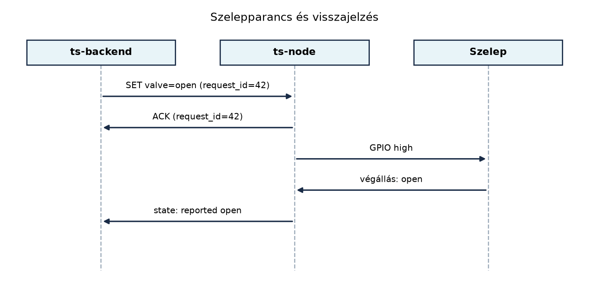

Az aktuátorok vezérlése az a pont, ahol az IoT-rendszer visszahat a fizikai világra. Egy szenzor hibás olvasása kellemetlen, de egy hibásan nyitva maradt öntözőszelep eláraszthat egy üvegházat, vagy egy beragadt fűtőrelé tönkreteheti a termést. A TerraSense üvegházában a talajnedvesség-szenzorok adatai alapján akarjuk nyitni és zárni az öntözőszelepet; ehhez olyan szoftver kell, amelyik akkor is biztonságos állapotba kerül, ha egy parancs elvész, a tápfeszültség pillanatra kimarad, vagy a visszajelző érzékelő meghibásodik.
Definíció. Az aktuátor (actuator) olyan eszköz, amely elektromos jelet fizikai hatássá alakít: mozgássá, hővé, fénnyé vagy áramlássá. IoT-kontextusban jellemzően szelep, relé, motor, fűtőszál vagy LED.
A mikrovezérlő kimenete általában logikai szintű GPIO jel, amely ritkán tud közvetlenül nagy teljesítményű terhelést kapcsolni. A leggyakoribb felépítés az, hogy a GPIO egy relét vagy egy félvezető kapcsolót (tranzisztort, MOSFET-et, SSR-t) vezérel, az pedig a tényleges eszközt kapcsolja. Egy mágnesszelep (solenoid valve) esetén a nyitáshoz és a záráshoz is lehet külön kimenet, de az ipari és kerti öntözőrendszerekben sokszor normally closed (NC) szelepet használnak: áram hatására nyit, áramtalanítva zár. Ez már egy passzív fail-safe tulajdonság.
/* GPIO-kimenet egy szelep számára Zephyr-ben */
#include <zephyr/drivers/gpio.h>
#define VALVE_NODE DT_ALIAS(valve)
static const struct gpio_dt_spec valve_gpio =
GPIO_DT_SPEC_GET(VALVE_NODE, gpios);
void valve_hw_open(const struct gpio_dt_spec *gpio, bool open)
{
/* NC szelep: 1 = nyit, 0 = zár */
gpio_pin_set_dt(gpio, open ? 1 : 0);
}Ha a szelep nem csak kétállapotú, hanem arányosan állítható (például motoros keverőszelep), akkor PWM kimenetet használunk. A PWM kitöltési tényezője határozza meg a motor pillanatnyi sebességét vagy egy fűtőelem teljesítményét, és a vezérlő szoftverben ugyancsak egy 0–100% közötti értékkel modellezhető.
A biztonságos alapállapot két szinten jelenik meg:
A TerraSense öntözőszelepének biztonságos alapállapota zárt, tehát a szoftveres fail-safe is zárást kell, hogy előírjon, ha elveszett a kapcsolat vagy lejárt a maximális öntözési idő.
Definíció. A maximális bekapcsolási idő (maximum on-time) az az időtartam, ameddig egy aktuátor megszakítás nélkül aktív állapotban maradhat. Ha a vezérlő eddig nem kapott érvényes leállító parancsot, akkor az aktuátort saját hatáskörben biztonságos állapotba állítja.
A maximális bekapcsolási idő véd a szoftverhibák, eltűnt hálózati parancsok és hibás szenzoradatok ellen. Például ha a talajnedvesség-szenzor beragad „száraz” értékre, az öntözés ne folyhasson órákig: a vezérlő legfeljebb 10 percig tarthatja nyitva a szelepet, utána automatikusan zár.
A visszajelzés (feedback) azt jelenti, hogy a rendszer nem csak kiadja a parancsot, hanem ellenőrzi is az aktuátor tényleges állapotát. Egy NC mágnesszelepnél a visszajelzés lehet:
Ha a parancsolt állapot (requested) és a visszajelzett
állapot (reported) tartósan eltér, akkor hibát jelzünk: a
szelep lehet, hogy mechanikusan beragadt, a relé nem kapcsolt, vagy a
visszajelző érzékelő hibás. Az ilyen eltérésre a biztonságos válasz
általában az, hogy a szelepet megkíséreljük zárni, a hibát pedig
naplózzuk és jelentjük a backend felé. A visszajelzés nélküli nyílt
hurkú vezérlés csak akkor elfogadható, ha a kockázat kicsi, és a
rendszer más szinten (például túlfolyásgátló, mechanikus nyomáskapcsoló)
már védve van.
/* Szelepvezérlő állapot időkorláttal és visszajelzéssel */
struct valve_ctrl {
const struct gpio_dt_spec gpio; /* kimeneti GPIO */
bool requested_open; /* parancsolt állapot */
bool reported_open; /* visszajelzett állapot */
int64_t on_deadline_ms; /* mikor kell lezárni */
int64_t max_on_time_ms; /* maximális bekapcsolási idő */
bool hw_present; /* szimulációban false */
};
int valve_set_target(struct valve_ctrl *v, bool open)
{
if (!v) return -EINVAL;
v->requested_open = open;
if (!v->hw_present) {
/* natív szimulációban csak naplózzuk */
v->reported_open = open;
} else {
valve_hw_open(&v->gpio, open);
/* valós hardveren a visszajelzést később olvassuk */
}
if (open) {
v->on_deadline_ms = k_uptime_get() + v->max_on_time_ms;
} else {
v->on_deadline_ms = 0;
}
return 0;
}
int valve_tick(struct valve_ctrl *v)
{
if (!v) return -EINVAL;
/* 1. időkorlát ellenőrzése */
if (v->requested_open && v->on_deadline_ms != 0 &&
k_uptime_get() >= v->on_deadline_ms) {
printk("valve: max on-time exceeded, forcing close\n");
return valve_set_target(v, false);
}
/* 2. visszajelzés olvasása valós hardveren */
if (v->hw_present) {
/* pl. egy bemeneti GPIO-t olvasunk */
/* v->reported_open = gpio_pin_get_dt(&sense_pin); */
}
/* 3. eltérés kezelése */
if (v->reported_open != v->requested_open) {
/* rövid türelmi idő után hiba; itt most azonnal jelezzük */
printk("valve: feedback mismatch, req=%d rep=%d\n",
v->requested_open, v->reported_open);
return -EIO;
}
return 0;
}A fenti valve_set_target() függvény
idempotens: ugyanazzal az állapottal többször meghívva
nem váltogat, hanem ugyanazt az eredményt adja. Ez döntő különbség a
váltás (toggle) szemantikához képest. Ha az MQTT-kapcsolat
rövid megszakadása miatt ugyanaz a „nyisd ki” parancs kétszer érkezik
meg, a toggle parancs kétszeri végrehajtása hibásan zárt állapotot
eredményezne; az idempotens set_target(true) viszont
egyszer nyit, másodjára semmit sem változtat. Az idempotencia tehát a
parancs megismételhetőségét biztosítja, ami az
at-least-once kézbesítés (QoS 1) természetes következménye.

Az ábrán látható, hogy a parancsra a csomópont először nyugtát küld, majd a tényleges állapotot jelenti. A nyugta önmagában még nem bizonyítja, hogy a szelep mechanikusan is átváltott; ezért kell a külön visszajelző üzenet. A MQTT QoS, munkamenetek, retain, Last Will és MQTT 5 alfejezetben látjuk majd, hogyan lehet ezt a nyugtázást QoS 1-gyel megbízhatóvá tenni.
| Szempont | Relé | Félvezető kapcsoló (SSR/MOSFET) |
|---|---|---|
| Mechanikus élettartam | jellemzően 10⁵–10⁶ kapcsolás | nincs mozgó alkatrész |
| Kapcsolási sebesség | lassú (ms) | gyors (µs) |
| Galvanikus leválasztás | általában van | nincs, vagy külön optocsatoló kell |
| Terhelhetőség (AC/DC) | mindkettő | főleg DC, AC-hez TRIAC/SSR |
| Zaj, csattogás | hallható | nincs |
A TerraSense öntözőszelepe jellemzően 24 V AC mágnesszelep, ezért relé vagy AC SSR jöhet szóba. A leggyakoribb hobbi és ipari megoldás a mechanikus relé, mert olcsó, egyszerű, és a szelep ritkán kapcsol (naponta néhányszor). Ha a kapcsolások száma nagy, vagy PWM-arányos vezérlés kell, akkor félvezetőt választunk.
A visszajelzés típusa szerint is dönthetünk:
A TerraSense-ben a labor első változatában a visszajelzést szimuláljuk, de a szoftver interfészét úgy alakítjuk ki, hogy később valós GPIO-visszajelzésre cserélhető legyen.
ts-node
szelepvezérlés szimulált GPIO-valMunkakönyvtár: ~/iot-labor/i015
mkdir -p ~/iot-labor/i015 && cd ~/iot-labor/i015A labor célja egy olyan szelepvezérlő modul elkészítése, amelyet a
későbbi alfejezetekben MQTT-parancsfeldolgozóval kötünk össze. Most a
parancsot egy egyszerű szimulált bemenetről kapjuk, a GPIO-t pedig a
native_sim célon csak naplózzuk.
Fájlok:
valve.h
#ifndef VALVE_H
#define VALVE_H
#include <zephyr/kernel.h>
#include <zephyr/device.h>
struct valve_ctrl {
bool requested_open;
bool reported_open;
bool hw_present;
int64_t on_deadline_ms;
int64_t max_on_time_ms;
};
int valve_init(struct valve_ctrl *v, int64_t max_on_time_ms,
bool hw_present);
int valve_set_target(struct valve_ctrl *v, bool open);
bool valve_is_open(const struct valve_ctrl *v);
int valve_tick(struct valve_ctrl *v);
#endifvalve.c
#include "valve.h"
#include <zephyr/kernel.h>
#include <zephyr/logging/log.h>
#include <errno.h>
LOG_MODULE_REGISTER(valve, LOG_LEVEL_INF);
int valve_init(struct valve_ctrl *v, int64_t max_on_time_ms,
bool hw_present)
{
if (!v) return -EINVAL;
v->requested_open = false;
v->reported_open = false;
v->hw_present = hw_present;
v->on_deadline_ms = 0;
v->max_on_time_ms = max_on_time_ms;
return 0;
}
int valve_set_target(struct valve_ctrl *v, bool open)
{
if (!v) return -EINVAL;
if (v->requested_open == open) {
/* idempotens: nem váltunk, csak frissítjük az időzítőt */
if (open) {
v->on_deadline_ms = k_uptime_get() + v->max_on_time_ms;
}
return 0;
}
v->requested_open = open;
if (!v->hw_present) {
v->reported_open = open;
LOG_INF("valve: simulated %s", open ? "open" : "closed");
} else {
/* valós GPIO-írás itt lenne */
/* gpio_pin_set_dt(&valve_gpio, open ? 1 : 0); */
/* visszajelzést később olvassuk */
LOG_INF("valve: hardware output set to %s",
open ? "open" : "closed");
}
if (open) {
v->on_deadline_ms = k_uptime_get() + v->max_on_time_ms;
} else {
v->on_deadline_ms = 0;
}
return 0;
}
bool valve_is_open(const struct valve_ctrl *v)
{
return v ? v->reported_open : false;
}
int valve_tick(struct valve_ctrl *v)
{
if (!v) return -EINVAL;
if (v->requested_open && v->on_deadline_ms != 0 &&
k_uptime_get() >= v->on_deadline_ms) {
LOG_WRN("max on-time exceeded, forcing close");
return valve_set_target(v, false);
}
if (v->reported_open != v->requested_open) {
LOG_ERR("feedback mismatch: requested=%d reported=%d",
v->requested_open, v->reported_open);
return -EIO;
}
return 0;
}main.c
#include <zephyr/kernel.h>
#include <zephyr/logging/log.h>
#include "valve.h"
LOG_MODULE_REGISTER(main, LOG_LEVEL_INF);
int main(void)
{
struct valve_ctrl valve;
int err;
/* max 10 másodperc, szimulált GPIO-val */
err = valve_init(&valve, 10000, true);
if (err) {
LOG_ERR("valve_init failed: %d", err);
return err;
}
/* szimulált parancs: nyitás */
err = valve_set_target(&valve, true);
if (err) {
LOG_ERR("valve_set_target failed: %d", err);
}
while (1) {
err = valve_tick(&valve);
if (err == -EIO) {
LOG_ERR("valve feedback error, closing");
valve_set_target(&valve, false);
}
k_sleep(K_MSEC(1000));
}
return 0;
}CMakeLists.txt
cmake_minimum_required(VERSION 3.20.0)
find_package(Zephyr REQUIRED HINTS $ENV{ZEPHYR_BASE})
project(ts_node_actuator)
target_sources(app PRIVATE src/main.c src/valve.c)prj.conf
CONFIG_LOG=yA src/ alkönyvtárba másoljuk a forrást; mivel a Zephyr
alapértelmezés szerint a src/ könyvtárat keresi, a
CMakeLists.txt explicit módon adja meg a fájlokat.
Build és futtatás:
west build -b native_sim -d build
./build/zephyr/zephyr.exeVárt kimenet (illusztratív, a log időbélyegei nélkül):
[00:00:00.000,000] <inf> main: valve: simulated open
[00:00:10.000,000] <wrn> valve: max on-time exceeded, forcing close
[00:00:10.000,000] <inf> valve: simulated closedA kimenet mutatja, hogy a szelep 10 másodperc után automatikusan zár,
még akkor is, ha a main nem ad le záró parancsot. A
szimulációban a visszajelzés azonnal követi a parancsot; valós hardveren
a valve_tick olvasná a bemeneti GPIO-t, és eltérés esetén
hibát jelezne.
A labor futtatásakor a következőket ellenőrizzük:
valve_tick valóban
lezár, és a logban max on-time exceeded üzenet jelenik
meg.valve_set_target(&valve, true) függvényt, a második
hívás nem vált, és a requested_open megmarad
true-nak.reported_open értékét átírjuk false-ra,
miközben requested_open true), a
valve_tick -EIO hibát ad, és a
main lezárja a szelepet.| Hibatünet | Ok | Javítás |
|---|---|---|
| A szelep azonnal visszazár a nyitás után | A maximális bekapcsolási idő túl rövid, vagy a
max_on_time_ms nullára inicializált |
Ellenőrizzük a valve_init hívás paraméterét; tegyük
nagyobbra, vagy javítsuk a kezdőértéket |
| A visszajelzés eltérés hibát jelez, bár a szelep működik | A visszajelző GPIO bemenete rosszul van konfigurálva, vagy a mechanikus végálláskapcsoló késlekedik | Adjunk türelmi időt a visszajelzés olvasására, és csak több másodperc elteltével jelezzünk hibát |
| A GPIO-írás nem látszik a logban | A hw_present értéke hamis, pedig hardvert
csatlakoztatnánk |
Állítsuk true-ra a valve_init hívásban, és
valósítsuk meg a GPIO-írást a megadott komment helyén |
A native_sim build hibát ad a GPIO driver hiánya
miatt |
A native_sim nem támogat valós GPIO-t |
Használjunk szimulált módot (hw_present=false) a natív
teszthez, és a hardveres GPIO-t csak valós board overlay-jel
fordítsuk |
toggle_valve() szemantikát
küld, akkor egy elveszett nyugta miatti újraküldés kétszer fordítja meg
az állapotot, és a szelep éppen az ellenkezőjére kerül. A parancs mindig
konkrét célállapotot írjon elő: set_valve(true) vagy
set_valve(false).valve_set_target(open) parancs, és miért hibás az
MQTT-alapú parancskiadásnál a valve_toggle()? Mondjon egy
konkrét forgatókönyvet, ahol az utóbbi kárt okoz.valve_tick függvényét egy feedback_pin
bemenettel: ha a hw_present igaz, olvassa le a megadott
GPIO bemenetet, és rendelje hozzá a reported_open mezőhöz.
Adjon hozzá 2 másodperc türelmi időt, mielőtt eltérést jelezne.valve_set_target(false) nem naplózza a zárást, ha a szelep
már zárva volt. Módosítsa a függvényt úgy, hogy minden állapotváltozást
(nyitás és zárás) logoljon, akkor is, ha az idempotens hívás miatt nincs
tényleges váltás. Indokolja, miért fontos ez a nyomkövetés
szempontjából.A set_target(open) ugyanazt a célállapotot írja elő,
így ha a parancs kétszer érkezik meg, másodszor nem változtat. A
toggle() viszont minden híváskor ellenkező állapotba viszi
a kimenetet. Tegyük fel, hogy a backend toggle() parancsot
küld, mert a felhasználó rákattintott egy gombra, de a nyugta elveszik,
és az MQTT QoS 1 újraküldés miatt a parancs másodszor is megérkezik. Az
első hívás nyitja, a második zárja a szelepet, pedig a felhasználó
nyitni akart. Ha a parancs set_target(true) lett volna, a
második hívás már nem változtatott volna.
A szelep napi energiafogyasztása nyitott állapotban: . Naponta 6 perc = 0,1 óra, tehát . Havonta . A maximális bekapcsolási idő: ha legfeljebb 0,5 liter vizet szabad átengedni, és az átfolyás 2 l/min, akkor .
A valve_tick bővítése türelmi idővel:
int valve_tick(struct valve_ctrl *v)
{
static int64_t mismatch_start_ms;
if (v->requested_open && v->on_deadline_ms != 0 &&
k_uptime_get() >= v->on_deadline_ms) {
printk("valve: max on-time exceeded, forcing close\n");
return valve_set_target(v, false);
}
if (v->hw_present && v->feedback_pin.port != NULL) {
v->reported_open = gpio_pin_get_dt(&v->feedback_pin) ? true : false;
}
if (v->reported_open != v->requested_open) {
if (mismatch_start_ms == 0) {
mismatch_start_ms = k_uptime_get();
} else if (k_uptime_get() - mismatch_start_ms > 2000) {
printk("valve: feedback mismatch for >2 s\n");
mismatch_start_ms = 0;
return -EIO;
}
} else {
mismatch_start_ms = 0;
}
return 0;
}valve_set_target:int valve_set_target(struct valve_ctrl *v, bool open)
{
if (!v) return -EINVAL;
if (v->requested_open != open) {
LOG_INF("valve: state change to %s", open ? "open" : "closed");
v->requested_open = open;
/* GPIO-írás és visszajelzés-frissítés itt */
} else {
LOG_DBG("valve: redundant set_target(%s), no change",
open ? "open" : "closed");
}
if (open) {
v->on_deadline_ms = k_uptime_get() + v->max_on_time_ms;
} else {
v->on_deadline_ms = 0;
}
return 0;
}Ebben az alfejezetben megterveztük a TerraSense öntözőszelepének
vezérlését. Az aktuátor egy NC mágnesszelep, amelyet GPIO-val és relével
kapcsolunk; a biztonságos alapállapot zárt. A valve_ctrl
modul (fájlok: valve.h, valve.c,
main.c a ~/iot-labor/i015/ könyvtárban)
idempotens valve_set_target(open) parancsot valósít meg,
maximális bekapcsolási időt tart, és a valve_tick ellenőrzi
a visszajelzést, eltérés esetén hibát jelez. A labor a
native_sim célon fut, ahol a GPIO-t szimuláljuk; valós
hardveren a visszajelző GPIO bemenetet kell bekötni. A továbbvitt
eredmény a valve_set_target idempotens
parancsfüggvény, amelyet az MQTT-parancsoknál (MQTT QoS, munkamenetek, retain, Last Will és MQTT
5), a lefelé irányuló parancsoknál (Parancsok és
konfiguráció lefelé: kézbesítés, nyugtázás, időkorlát) és az
eszközárnyéknál (Eszközárnyék és digitális iker:
kívánt és jelentett állapot) használunk fel.
A Zephyr GPIO API (gpio_pin_set_dt,
gpio_pin_get_dt, GPIO_DT_SPEC_GET) stabil, a
példa a Zephyr aktuális dokumentációjának mintáját követi, de a pontos
függvénynevek és makrók verziófüggőek; használat előtt ellenőrizze a
telepített Zephyr verziójának dokumentációját. A relé, szelep és
félvezető kapcsoló paraméterei (élettartam, kapcsolási idő) nagyságrendi
értékek, a konkrét adatlapoktól függenek. A native_sim
board GPIO-szimulációs képessége korlátozott, ezért a labor szimulált
módot használ; a valós hardver bekötése az Opcionális valós hardver: fejlesztőkártyák és
szenzorok alfejezetben ismertetett eszközökhöz igazodik.